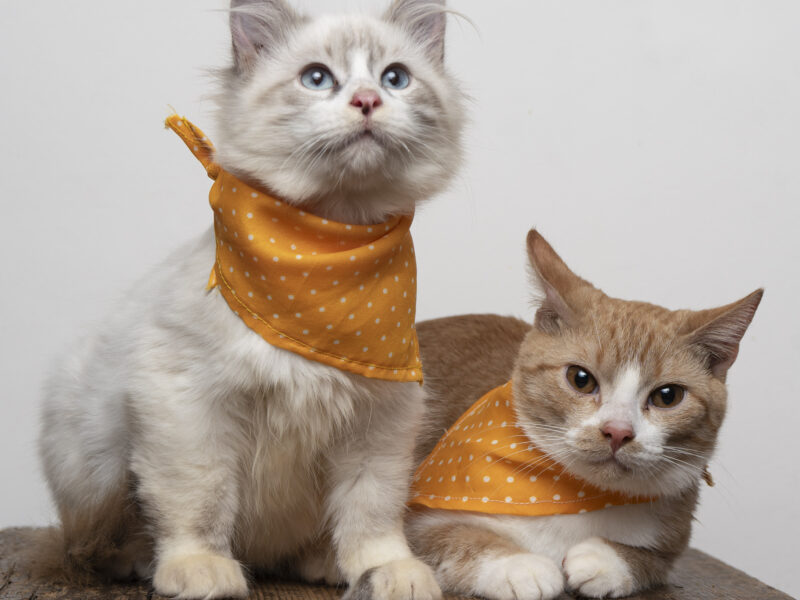

2025-09-02
14:00
son hogareños y muy simpáticos c:

| ¿Dónde? | |
|---|---|
| Región | Santiago |
| Comuna | Ñuñoa |
| Sector | Plaza Egaña |
| Contacto de esta publicación | |
|---|---|
| Nombre | Arturo Navarrete |
| arturonavarrete@gmail.com | |
| Número de celular | +569.12345678 |
| Contactar por |
Telegram
@arturo_n |
| ¿Qué mascota ofrece en adopción? | |
|---|---|
| tipo | Gato |
| Cantidad | 2 |
| Edad | 3 |
| Unidad medida edad | Meses |
| Fecha disponible para entrega | 2025-09-02 14:00 |
| Descripción |
Uno es naranjo con blanco y el otro es blanco de ojos azules, son hogareños y muy simpáticos c: |
| Foto |  |